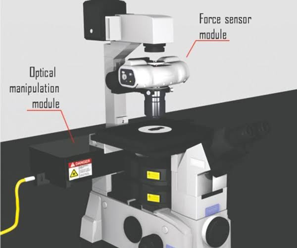

ARTHUR ASHKIN(1922-present)
আর্থার অ্যাশকিন (ইংরেজি: Arthur Ashkin; জন্ম: ২ সেপ্টেম্বর ১৯২২) হচ্ছেন একজন আমেরিকান বিজ্ঞানী ও নোবেল বিজয়ী, তিনি বেল ল্যাব ও লুসেন্ট টেকনোলজিতে কাজ করেছেন। অনেকে মনে করেন অ্যাশকিন অপটিক্যাল টুয়েজারের জনক, এ কারণেই 2018সালে নোবেল পুরষ্কার পান
| ARTHUR ASHKIN | |
|---|---|
| জন্ম | ২ সেপ্টেম্বর ১৯২২ (বয়স ৯৮) ব্রুকলিন, নিউ ইয়র্ক, যুক্তরাষ্ট্র |
| কর্মক্ষেত্র | পদার্থবিজ্ঞান |
| প্রতিষ্ঠান | বেল পরীক্ষাগার, লুসেন্ট টেকনোলজি |
| প্রাক্তন ছাত্র | কলম্বিয়া বিশ্ববিদ্যালয়, কর্নেল বিশ্ববিদ্যালয় |
| উল্লেখযোগ্য পুরষ্কার | পদার্থবিজ্ঞানে নোবেল (২০১৮) |
বিভিন্ন পেশাদার সোসাইটির সদস্যের পাশাপাশি অ্যাশকিন অপটিক্যাল সোসাইটি অব আমেরিক (OSA), মার্কিন ফিজিক্যাল সোসাইটির (APS) এবং ইন্সটিউট অব ইলেক্ট্রিক্যাল এন্ড ইলেক্ট্রনিক্স ইঞ্জিনিয়ারসের (IEEE) ফেলো। ৪০ বছর কাজের পর ১৯৯২ সালে তিনি বেল ল্যাব থেকে পদত্যাগ করেন। সেসময়ে তিনি প্রায়োগিক পদার্থবিজ্ঞানে অনেক অবদান রাখেন। তিনি অনেক গবেষণা প্রতিবেদনের লেখক ছিলেন এবং তার নামে ৪৭ টি পেটেন্ট আছে। তিনি ২০০৩ সালে জোসেফ এফ. কেইথলি এবং ২০০৪ সালে হার্ভার্ড পুরস্কার পান। তিনি ১৯৮৪ সালে ন্যাশনাল একাডেমী অব ইঞ্জিনিয়ারিং এবং ১৯৯৬ সালে ন্যাশনাল একাডেমী অব সায়েন্স প্রতিষ্ঠানে গবেষণার জন্য নির্বাচিত হন। বর্তমানে তিনি তার ঘরের পরীক্ষাগারেই তার কাজ চালিয়ে যাচ্ছেন। অপটিক্যাল টুয়েজার ছাড়াও, আসকিন ফটোরিফ্র্যাকশন, সেকেন্ড হারমোনিক জেনারেশন, এবং ফাইবারে নন-লিনিয়ার অপটিকসের জন্য প্রখ্যাত ।
তার তৈরি কৃত আবিষ্কারঃ
ARTHUR ASHKIN NOBLE PRIZE LECTURE IN 2018:
GERARD MOUROU(1944-present)
Gerard Albert Mourou (French: [ʒeʁaʁ muʁu]; born 22 June 1944) is a French scientist and pioneer in the field of electrical engineering and lasers. He was awarded a Nobel Prize in Physics in 2018, along with Donna Strickland, for the invention of chirped pulse amplification, a technique later used to create ultrashort-pulse, very high-intensity (petawatt) laser pulses
| GERARD MOUROU | |
|---|---|
| BORN | Gérard Albert Mourou 22 June 1944 (age 76) Albertville, Occupied France |
| EDUCATION | University of Grenoble (BSc, MSc) Pierre and Marie Curie University (PhD) |
| KNOWN FOR | Chirped pulse amplification |
| AWARD | Nobel Prize in Physics (2018) |
| SCIENTIFIC CAREER | |
| INSTITUTION | École polytechnique ENSTA ParisTech University of Rochester University of Michigan |
| DOCTORAL STUDENTS | Donna Strickland |
In 1994, Mourou and his team at the University of Michigan discovered that the balance between the self-focusing refraction (see Kerr effect) and self-attenuating diffraction by ionization and rarefaction of a laser beam of terawatt intensities in the atmosphere creates "filaments" which act as waveguides for the beam, thus preventing divergence.
GARARD MOUROU NOBLE PRIZE LECTURE IN 2018:
©faysal hossain
DONNA STRICKLAND(1959-present)
Donna Theo Strickland, FRS CC (born 27 May 1959) is a Canadian optical physicist and pioneer in the field of pulsed lasers. She was awarded the Nobel Prize in Physics in 2018, together with Gérard Mourou, for the practical implementation of chirped pulse amplification. She is a professor at the University of Waterloo in Ontario, Canada.
| DONNA STRICKLAND | |
|---|---|
| BORN | Donna Theo Strickland 27 May 1959 (age 61) Guelph, Ontario, Canada |
| EDUCATION | McMaster University (BEng) University of Rochester (MS, PhD) |
| KNOWN FOR | interactions Nonlinear optics Short-pulse intense laser systems Chirped pulse amplification Ultrafast optics |
| SPOUSE(S) | Doug Dykaar |
| CHILDREN | 2 |
| AWARDS | Alfred P. Sloan Research Fellowship (1998) Fellow of the Optical Society (2008) Nobel Prize in Physics (2018) Member of the National Academy of Sciences (2020) |
| SCIENTIFIC CAREER | |
| FIELDS | Physics Optics Lasers Institutions University |
| THESIS | Development of an ultra-bright laser and an application to multi-photon ionization (1988) |
| DOCTORAL ADVISOR | GERARD MOUROU |
She served as fellow, vice president, and president of The Optical Society, and is currently chair of their Presidential Advisory Committee. In 2018, she was listed as one of BBC's 100 Women.
Donna Strickland:Nobel Lecture In Physics 2018
©faysal hossain
Kip S. Thorne during Nobel Prize press conference in Stockholm, December 2017
KIP S. THORNE(1940-present)
Kip Stephen Thorne (born June 1, 1940) is an American theoretical physicist known for his contributions in gravitational physics and astrophysics. A longtime friend and colleague of Stephen Hawking and Carl Sagan, he was the Feynman Professor of Theoretical Physics at the California Institute of Technology (Caltech) until 2009 and is one of the world's leading experts on the astrophysical implications of Einstein's general theory of relativity. He continues to do scientific research and scientific consulting, most notably for the Christopher Nolan film Interstellar.Thorne was awarded the 2017 Nobel Prize in Physics along with Rainer Weiss and Barry C. Barish "for decisive contributions to the LIGO detector and the observation of gravitational waves".
| KIP S. THORNE | |
|---|---|
| BORN | Kip Stephen Thorne June 1, 1940 (age 80) Logan, Utah, U.S. |
| EDUCATION | California Institute of Technology (B.S.) Princeton University (M.S., Ph.D.) |
| KNOWN FOR | Thorne-Żytkow object Roman arch Thorne-Hawking-Preskill bet LIGO Gravitational waves Gravitation |
| SPOUSE(S) | Linda Jean Peterson (m. 1960; div. 1977) Carolee Joyce Winstein (m. 1984) |
| CHILDREN | 2 |
| AWARDS | Lilienfeld Prize (1996) Albert Einstein Medal (2009)[1] Special Breakthrough Prize in Fundamental Physics (2016) Gruber Prize in Cosmology (2016) Shaw Prize (2016) Kavli Prize (2016) Harvey Prize (2016) Princess of Asturias Award (2017) Nobel Prize in Physics (2017) Lewis Thomas Prize (2018) |
| SCIENTIFIC CAREER | |
| FIELDS | Astrophysics Gravitational physics |
| INSTITUTION | California Institute of Technology Cornell University |
| THESIS | Geometrodynamics of cylindrical systems (1965) |
| DOCTORAL ADVISER | John Archibald Wheeler |
| DOCTORAL STUDENTS | William L. Burke[2] Carlton M. Caves Lee Samuel Finn Sándor J. Kovács David L. Lee Alan Lightman Don N. Page William H. Press Richard H. Price Bernard F. Schutz Saul Teukolsky Clifford Martin Will |
KIP S. THORNE NOBLE LECTURE IN 2017:
Rainer Weiss during Nobel Prize press conference in Stockholm, December 2017
RAINER WEISS(1932-PRESENT)
Rainer "Rai" Weiss (/waɪs/; German: [vaɪs]; born September 29, 1932) is an American physicist, known for his contributions in gravitational physics and astrophysics. He is a professor of physics emeritus at MIT and an adjunct professor at LSU. He is best known for inventing the laser interferometric technique which is the basic operation of LIGO. He was Chair of the COBE Science Working Group.
| RAINER WEISS | |
|---|---|
| BORN | September 29, 1932 (age 88) Berlin, Germany |
| EDUCATION | Massachusetts Institute of Technology (BS, PhD) |
| KNOWN FOR | Pioneering laser interferometric gravitational wave observation |
| AWARDS | Einstein Prize (2007) Special Breakthrough Prize in Fundamental Physics (2016) Gruber Prize in Cosmology (2016) Shaw Prize (2016) Kavli Prize (2016) Harvey Prize (2016) Princess of Asturias Award (2017) Nobel Prize in Physics (2017) |
| SCIENTIFIC CAREER | |
| FIELDS | Physics Laser physics Experimental gravitation Cosmic background measurements |
| INSTITUTION | Massachusetts Institute of Technology Princeton University Tufts University |
| THESIS | Stark Effect and Hyperfine Structure of Hydrogen Fluoride (1962) |
| DOCTORAL ADVISOR | Jerrold R. Zacharias |
| DOCTORAL STUDENTS | Nergis Mavalvala |
| OTHER NOTABLE STUDENTS | Bruce Allen Sarah Veatch |
| INFLUENCES | Robert H. Dicke |
He is a member of the Fermilab Holometer experiment, which uses a 40m laser interferometer to measure properties of space and time at quantum scale and provide Planck-precision tests of quantum holographic fluctuation. In 2017, Weiss was awarded the Nobel Prize in Physics, along with Kip Thorne and Barry Barish, "for decisive contributions to the LIGO detector and the observation of gravitational waves".
RAINER WEISS NOBLE LECTURE IN 2017:
®©md.faysal hossain©®